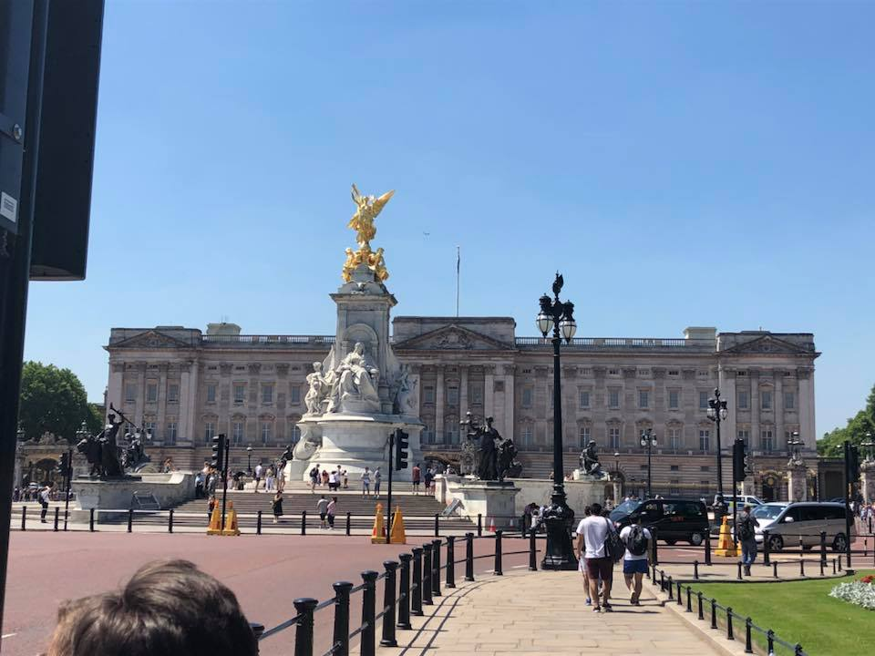
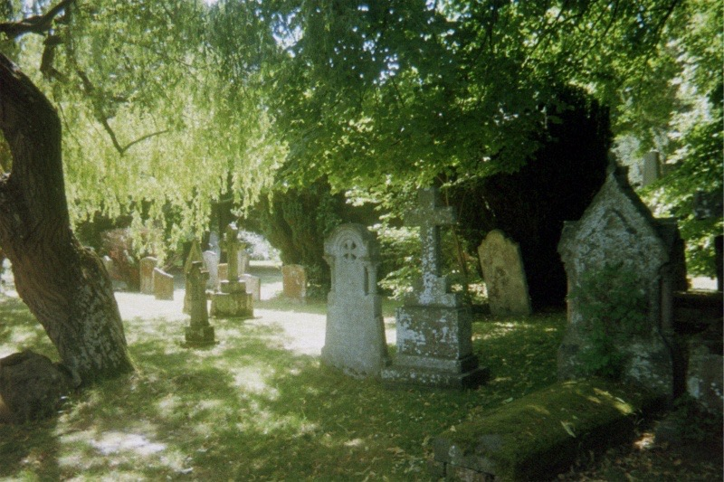

The London Eye
Also known as the Millenium Wheel
London, England

Buckingham Palace
London, England
A cute flower stand I passed,
somewhere in England

A graveyard I stumbled upon on my way to Holy Trinity Church, where Shakespeare is buried. Most of the gravestones were from the 1700's.